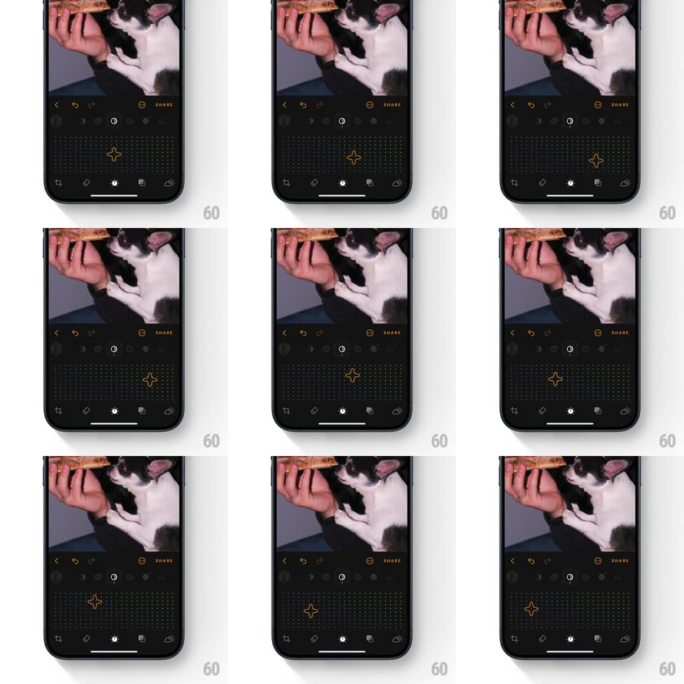

Media
Frame-by-frame

Rebuild this interaction 1:1: Luminar's saturation/vibrance 2D graph slider - a square field of tiny colored dots with a star-shaped (four-point sparkle) handle that glides across the grid in both axes, the dots near the handle tinting and scaling as it passes, adjusting saturation and vibrance together.

Rebuild this interaction 1:1: Luminar's saturation/vibrance 2D graph slider - a square field of tiny colored dots with a star-shaped (four-point sparkle) handle that glides across the grid in both axes, the dots near the handle tinting and scaling as it passes, adjusting saturation and vibrance together. ## Integration Integration: stack-agnostic spec - springs given as stiffness/damping, timed motions as duration + curve; map every value to your framework and animation library of choice. ## Scene Dark photo editor: cat photo above, and the control below - a rounded square field filled with a dense dot grid (each dot a tiny plus/spark in muted rainbow hues arranged by position), the amber-outlined four-point star handle sitting on the field. ## Motion spec Pattern: 2D free-drag pad on a reactive dot field. - Drag: the star handle follows the finger freely in X and Y (1:1 with 120ms critically damped smoothing), clamped to the field; X maps saturation, Y maps vibrance. - Dots within a ~40px radius of the handle scale up (1 -> 1.8) and saturate to full color with a radial falloff; dots behind the handle's path keep a brief afterglow (300ms decay). - The handle itself breathes while held (scale 1 <-> 1.08, 800ms loop) and rotates slowly (4deg/s) - a sparkle, not a cursor. - Release: the handle settles with a soft spring (stiffness ~320, damping ~20, tiny overshoot) and the dot field relaxes to rest. - Photo updates live along both axes. ## Calibration - The dot field's rest state is dim and desaturated - the handle is what brings color to it, mirroring what the control does to the photo. - Movement is genuinely 2D - no axis locking unless the drag starts clearly horizontal/vertical (then soft-assist, 10:1 ratio). ## Reduced motion Dots static; handle moves without the scale ripple. ## Don't miss - The handle is a four-point sparkle outline, hollow in the middle. - Grid dots are hue-arranged - warm tones one side, cool the other - so position reads as color meaning.